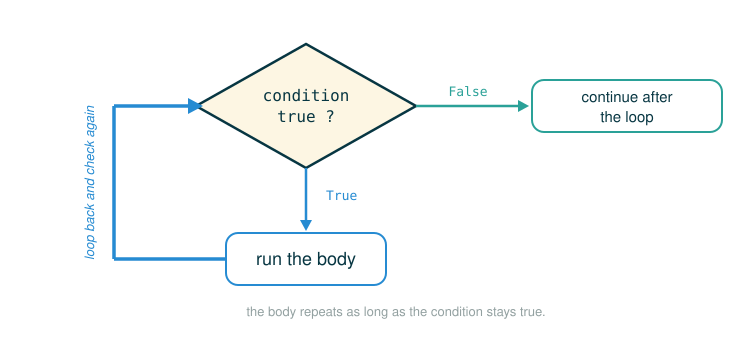

1.5 Control: Iteration, Testing, and Defensive Mental Models
By the end of this lesson you will be able to do four things: write a while loop that repeats work and reliably stops, build the Fibonacci sequence with a small two-number window, trace a loop by hand so you can predict its result before you run it, and turn your expectations about a function into checks the machine performs for you using assertions and doctests.
The unifying habit is defensive: a loop or a test is only trustworthy if you can say, out loud, why it does what you claim. We will keep separating each loop into its smallest moving parts and asking the same two questions every time: what changes on each pass, and why will the loop eventually finish?
Repetition Gives Computers Their Power
If every line of code could run only once, a computer would be little more than a fast calculator. The real leverage comes from repetition: a small set of instructions carried out many times, without fatigue and without drift. You have already met one form of repetition, since a function written once can be called again and again. A loop is the other form. It runs the same statements many times inside a single call.
A while loop expresses one plain idea:
As long as this condition is true, keep running this suite.So a loop always needs two cooperating pieces:
- a condition that decides whether the loop keeps going
- a body that makes progress toward making that condition false
Drop the second piece and the loop never ends.
A loop is like a turnstile with a question posted above it. Every time the program arrives back at the top of the loop, it asks the question again. If the answer is yes, it passes through the turnstile and runs the body once more. If the answer is no, it leaves the loop and moves on.
That picture rules out a common misreading. A loop is not a one-time if. The condition is re-checked after every pass, not just once at the start. For the answer to ever change, the body has to change the program's state, so that the same question can eventually get a different answer.
The Anatomy of while
In Composing Programs, a while clause is described as a header expression followed by a suite. The general form is:
# (1)
while <expression>:
<suite>
Follow the line and name what each part does:
while <expression>:
├─ while ......... begins a loop that may repeat its suite many times
├─ <expression> .. the condition, tested before every pass
├─ : ............. ends the header and announces the indented suite
├─ <suite> ....... the statements that run on each pass
└─ performs ...... runs the suite repeatedly until the condition is falseThe execution rule from the text is just two steps, with an implied return to the top:
1. Evaluate the header's expression.
2. If it is a true value, execute the suite, then return to step 1.Two consequences of that rule are worth fixing in your mind now. First, the entire suite of the while clause is executed before the header expression is evaluated again; Python does not re-check the condition in the middle of a pass. Second, to keep the suite from running forever, the suite should always change some binding on each pass. A while statement that never finishes is called an infinite loop, and you can force Python to stop it by pressing Control-C.
Drawn as a flowchart, that implied return to the top becomes a visible loop: the condition is checked, the body runs, and control travels right back up to check the condition again.

A Smaller Loop Before Fibonacci
The Fibonacci loop juggles three changing names at once. Before taking that on, it helps to run a loop that changes only a single value, so the machine model stays small and you can watch one thing move.
# (2)
def count_up_to(n):
k = 1
while k <= n:
print(k)
k = k + 1
Calling it:
# (3)
count_up_to(4)
displays:
1
2
3
4When the call begins, the local frame holds:
n -> 4
k -> 1Every pass asks the same question at the top of the loop:
Is k <= n?If the answer is true, the body runs these two statements in order:
print(k)
k = k + 1Trace it slowly, one pass per line:
k = 1: 1 <= 4 is true, print 1, k becomes 2
k = 2: 2 <= 4 is true, print 2, k becomes 3
k = 3: 3 <= 4 is true, print 3, k becomes 4
k = 4: 4 <= 4 is true, print 4, k becomes 5
k = 5: 5 <= 4 is false, stopThat is the simplest loop pattern there is:
start a counter
repeat while the counter is still in range
change the counter so the loop can eventually stopThe third line is the one beginners forget, and it is exactly the binding-change the text insists every suite must make.
Adding a Running Total
Now add one more changing value alongside the counter. The counter still controls when to stop, and a second name accumulates a result.
# (4)
def sum_first_n(n):
total = 0
k = 1
while k <= n:
total = total + k
k = k + 1
return total
Calling:
# (5)
sum_first_n(4)
computes:
Trace the local frame, watching both total and k move:
Start:
n -> 4
total -> 0
k -> 1
Pass 1:
total = total + k -> 0 + 1 -> 1
k = k + 1 -> 2
Pass 2:
total = total + k -> 1 + 2 -> 3
k = k + 1 -> 3
Pass 3:
total = total + k -> 3 + 3 -> 6
k = k + 1 -> 4
Pass 4:
total = total + k -> 6 + 4 -> 10
k = k + 1 -> 5
Stop because 5 <= 4 is false.
Return 10.This is the on-ramp to Fibonacci, because Fibonacci also carries values forward across passes. The one difference is what it remembers: sum_first_n keeps a single running total, while Fibonacci needs the two most recent values.
The running total also gives us our first loop invariant in plain language:
After each pass, total holds the sum of the numbers already processed.An invariant is a fact you expect to stay meaningfully true while the loop runs. For sum_first_n, the exact number stored in total changes every pass, but its meaning does not: it is always "the sum so far." Fibonacci will rely on the same idea, giving stable meanings to its two carried values.
The Fibonacci Sequence
Composing Programs introduces iteration through the Fibonacci numbers, in which each number is the sum of the preceding two:
0, 1, 1, 2, 3, 5, 8, 13, 21, ...Each value is built by repeatedly applying the sum-previous-two rule. The first and second values are fixed at 0 and 1. For instance, the eighth Fibonacci number is 13.
If we number the sequence by position, in the style this function uses:
Fib 1 -> 0
Fib 2 -> 1
Fib 3 -> 1
Fib 4 -> 2
Fib 5 -> 3
Fib 6 -> 5
Fib 7 -> 8
Fib 8 -> 13The name "Fibonacci" can make this feel more advanced than it is. At this stage, treat it as a rule for producing the next item in a list:
next item = previous item + current itemThe hard part is not the addition. The hard part is keeping straight which two values are currently playing the roles of previous and current. That bookkeeping is what the next section makes concrete before we return to code.
A Two-Number Rolling Window
The trick that makes the code small is to never hold the whole sequence at once. You only ever keep a tiny moving window of two numbers and slide it forward.
Picture reading a line of numbers with two fingers:
0, 1, 1, 2, 3, 5, 8, 13
^ ^The left finger sits on the previous number; the right finger sits on the current number. To take a step, first compute the next number:
next = previous + currentThen slide both fingers one place to the right:
previous becomes current
current becomes nextWith actual numbers:
previous = 0
current = 1
next = 0 + 1 = 1
previous becomes 1
current becomes 1One more step:
previous = 1
current = 1
next = 1 + 1 = 2
previous becomes 1
current becomes 2In the function, these two fingers have names:
pred -> previous Fibonacci number
curr -> current Fibonacci numberSo Fibonacci is not some exotic new kind of loop. It is a counter loop with a two-number rolling window riding along beside it.
Computing Fibonacci with while
Here is the iterative function exactly as it appears in the text. We track which Fibonacci number curr currently represents (k), the value at that position (curr), and the value just before it (pred).
# (6)
def fib(n):
"""Compute the nth Fibonacci number, for n >= 2."""
pred, curr = 0, 1 # Fibonacci numbers 1 and 2
k = 2 # Which Fib number is curr?
while k < n:
pred, curr = curr, pred + curr
k = k + 1
return curr
result = fib(8)
The function keeps three local names, and the comments tell you their roles:
pred -> the previous Fibonacci number
curr -> the current Fibonacci number
k -> which Fibonacci number curr representsAt the start of the call:
pred -> 0
curr -> 1
k -> 2In meaning, that initial state reads:
pred remembers Fib 1, which is 0
curr remembers Fib 2, which is 1
k remembers the position of curr, which is 2The loop's whole job is to slide that meaning forward until curr remembers Fib n. The condition k < n keeps the loop going as long as curr has not yet reached the requested position. The code is far easier to trust once each name has a role to defend, not just a number inside it.
Follow the line on the call that drives the example, and read off the value it produces:
result = fib(8)
├─ fib ......... the function that computes a Fibonacci number
├─ ( ........... begins the input
├─ 8 ........... we want the 8th Fibonacci number
├─ ) ........... ends the input
├─ result = .... binds the returned value to the name result
└─ evaluates to 13The Anatomy of Simultaneous Assignment
This single line is the engine of the loop, and it is also where the most expensive bug hides:
# (7)
pred, curr = curr, pred + curr
The text states the rule plainly: this line rebinds pred to the value of curr, and simultaneously rebinds curr to the value of pred + curr. All of the expressions to the right of = are evaluated before any rebinding takes place. That order of events, evaluating everything on the right before updating any binding on the left, is essential for the correctness of this function.
Follow the line as Python actually processes it, assuming pred is 3 and curr is 5:
pred, curr = curr, pred + curr
├─ curr ........... right side, reads the old curr -> 5
├─ pred + curr .... right side, uses the old values -> 3 + 5 -> 8
├─ (5, 8) ......... both right-side values, held before any rebinding
├─ pred = 5 ....... left side, rebinds pred to the first value
├─ curr = 8 ....... left side, rebinds curr to the second value
└─ performs ....... slides the window forward to the next Fibonacci pairSaid as numbered steps, with pred = 3 and curr = 5:
Step 1: read old values
pred = 3
curr = 5
Step 2: compute the whole right side using old values
curr, pred + curr -> 5, 8
Step 3: rebind the left side all at once
pred -> 5
curr -> 8The reason this matters is that the obvious one-line-at-a-time rewrite is wrong:
# (8)
pred = curr
curr = pred + curr
With pred = 3 and curr = 5, version (8) does:
pred = curr -> pred becomes 5
curr = pred+curr -> curr becomes 5+5, which is 10The first line overwrote pred before the second line could read its old value, so the second line added 5 to itself instead of to 3. Simultaneous assignment exists precisely to prevent this. Remember that commas separate multiple names and values on both sides of a single assignment statement.
Tracing fib(8) by Hand
Start the trace from the initial state:
pred = 0
curr = 1
k = 2Each pass first checks k < n, then runs the simultaneous assignment, then increments k. Watch all three names move together:
Before pass 1: k = 2, pred = 0, curr = 1
After pass 1: k = 3, pred = 1, curr = 1
Before pass 2: k = 3, pred = 1, curr = 1
After pass 2: k = 4, pred = 1, curr = 2
Before pass 3: k = 4, pred = 1, curr = 2
After pass 3: k = 5, pred = 2, curr = 3
Before pass 4: k = 5, pred = 2, curr = 3
After pass 4: k = 6, pred = 3, curr = 5
Before pass 5: k = 6, pred = 3, curr = 5
After pass 5: k = 7, pred = 5, curr = 8
Before pass 6: k = 7, pred = 5, curr = 8
After pass 6: k = 8, pred = 8, curr = 13Now the condition is checked one more time:
k < n
8 < 8
FalseThe loop stops, and the function returns the value bound to curr:
13A Step-by-Step Environment Trace of fib(8)
The hand trace above tracks the three names as plain rows. The same run looks slightly different drawn as an environment diagram, which uses one frame for the whole call and writes each binding as a name -> value row. The call to fib(8) opens one local frame, and every statement rewrites a binding inside it:
fib(8) frame
n -> 8
pred -> 0
curr -> 1
k -> 2
...
__return__ -> 13When you reach the return statement, the frame records the result with the special __return__ row, the notation a diagram uses for the value the call hands back. Step the fib(8) block above one statement at a time and watch this single frame: pred, curr, and k are overwritten in place pass after pass, and no second frame ever opens. That is exactly why the simultaneous-assignment rule matters so much: all the work happens by rewriting bindings inside one frame.
Infinite Loops
The text's warning is concrete: to keep a suite from running forever, it must change some binding on each pass. Here is a loop that forgets to:
# (9)
k = 1
while k < 5:
print(k)
The condition k < 5 is true when k is 1, and the body never touches k, so the condition stays true on every recheck. The loop prints 1 endlessly. This is an infinite loop, and pressing Control-C forces Python to stop.
The fix adds the missing binding-change:
# (10)
k = 1
while k < 5:
print(k)
k = k + 1
Now the state moves toward the exit:
k = 1 -> print 1 -> k becomes 2
k = 2 -> print 2 -> k becomes 3
k = 3 -> print 3 -> k becomes 4
k = 4 -> print 4 -> k becomes 5
k = 5 -> condition is false -> stopWhen a loop will not stop, the cause is almost always the same: the body never changes the state that the condition depends on.
Testing: Turning Expectations Into Checks
Testing a function is the act of verifying that its behavior matches expectations. Our language of functions is now complex enough that we should start testing our implementations rather than eyeballing them.
A test is a mechanism for performing that verification systematically. A test usually takes the form of another function containing one or more sample calls to the function being tested, whose returned values are then checked against expected results. Unlike most functions, which are meant to be general, a test deliberately selects specific argument values and validates the calls for exactly those values. Tests also double as documentation: they show how to call a function and which argument values make sense.
Assertions
Programmers use assert statements to verify expectations, such as the output of a function being tested. An assert statement has an expression in a boolean context, followed by a quoted line of text (single or double quotes are both fine, as long as you stay consistent) that is displayed if the expression evaluates to a false value.
# (11)
assert fib(8) == 13, 'The 8th Fibonacci number should be 13'
Follow the line and name each part by what it does:
assert fib(8) == 13, 'The 8th Fibonacci number should be 13'
├─ assert .......... states a claim that must be true to continue
├─ fib(8) == 13 .... the expression checked in a boolean context
├─ , ............... separates the claim from the message
├─ '...' ........... text shown only if the claim is false
└─ performs ........ does nothing if true; halts with an error if falseWhen the asserted expression evaluates to a true value, executing the assert statement has no effect at all. When it evaluates to a false value, assert causes an error that halts execution. This is the key mental shift: an assertion is not output for a user and it is not a complaint after the fact. It is a precise, machine-checked statement of what you expect to be true at that point in the program.
A Test Function
A test function for fib should test several arguments, including extreme values of n. Here is the one from the text, verbatim:
# (12)
def fib_test():
assert fib(2) == 1, 'The 2nd Fibonacci number should be 1'
assert fib(3) == 1, 'The 3rd Fibonacci number should be 1'
assert fib(50) == 7778742049, 'Error at the 50th Fibonacci number'
Read what this set of checks is buying you:
fib(2) -> 1 a small boundary value, right at the start
fib(3) -> 1 the next small value
fib(50) -> 7778742049 a much larger value, deep into the loopYou are not expected to verify 7778742049 by hand; its only job is to be a value far enough into the sequence that a subtle rolling-window bug would have shown up by then. The large case earns its place: a mistake in the rolling-window logic might still produce correct early values and only diverge after many passes, and fib(50) is what catches it. When you write Python in files rather than typing directly into the interpreter, tests like this are usually placed in the same file or in a neighboring file whose name ends with the suffix _test.py.
Doctests
Python also offers a convenient way to place simple tests directly in the docstring of a function. The convention is precise: the first line of a docstring should give a one-line description of the function, followed by a blank line, and then an optional longer description of the arguments and behavior. The docstring may also include a sample interactive session that calls the function, written exactly as it would look at the >>> prompt.
# (13)
def sum_naturals(n):
"""Return the sum of the first n natural numbers.
>>> sum_naturals(10)
55
>>> sum_naturals(100)
5050
"""
total, k = 0, 1
while k <= n:
total, k = total + k, k + 1
return total
This function adds up the natural numbers:
For n = 10 the doctest claims the answer is 55:
For n = 100, the doctest claims 5050, which matches the closed-form sum:
The value of a doctest is that it turns an explanation into a promise. The docstring no longer merely says "this function adds natural numbers"; it makes two checkable claims:
If the input is 10, the output should be 55.
If the input is 100, the output should be 5050.That helps a beginner twice over. The examples teach the intended behavior by showing real calls and real answers, and the same examples become a safety net that protects that behavior when the code is edited later.
Running Doctests
The interactions in a docstring can be verified with the doctest module. The globals function returns a representation of the global environment, which the interpreter needs in order to evaluate the example expressions. To run every doctest in the current module:
# (14)
from doctest import testmod
testmod()
If the examples pass, Python reports a small summary object:
TestResults(failed=0, attempted=2)To verify the doctest interactions for only a single function, use the doctest function run_docstring_examples. This function is, unfortunately, a bit fiddly to call. Its first argument is the function to test. The second should always be the result of the expression globals(), the built-in that returns the global environment. The third argument is True, asking for "verbose" output, which is a catalog of every test that ran.
# (15)
from doctest import run_docstring_examples
run_docstring_examples(sum_naturals, globals(), True)
Follow the line so the three arguments stop looking like magic:
run_docstring_examples(sum_naturals, globals(), True)
├─ run_docstring_examples .. runs the doctests found on one function
├─ sum_naturals ............ the function whose docstring is examined
├─ globals() ............... the global environment, so names resolve
├─ True .................... ask for verbose output, listing each test
└─ performs ................ runs each example and reports ok or failureWith verbose output on, Python narrates each example it finds, the value it expects, and whether the actual result matched:
Finding tests in NoName
Trying:
sum_naturals(10)
Expecting:
55
ok
Trying:
sum_naturals(100)
Expecting:
5050
okWhen a function's return value does not match the expected result, run_docstring_examples reports the mismatch as a test failure instead of printing ok.
When you write Python in files, all the doctests in a file can be run at once by starting Python with the doctest command-line option:
python3 -m doctest <python_source_file>Replace <python_source_file> with the path to your file.
The key to effective testing is to write and run tests immediately after implementing a new function. It is even good practice to write some tests before you implement, so you have example inputs and outputs in mind as you work. A test that applies a single function is called a unit test, and exhaustive unit testing is a hallmark of good program design.
⚠Common Beginner Traps
| Mistake | What Goes Wrong | Safer Question |
|---|---|---|
| Forgetting to update the loop variable | The while condition stays true forever and the loop runs without stopping until you press Control-C |
Which binding moves the loop toward stopping? |
| Expecting the loop to stop the instant the condition flips mid-body | The condition is re-checked only between full passes, so the rest of the suite still runs to completion before the next check | Has a full pass finished before I expect the next condition check? |
| Updating Fibonacci one variable at a time | The old value needed for the second update is overwritten first, so fib returns a wrong, too-large number |
Should these names change simultaneously? |
Treating assert as normal program output |
Nothing prints on success, so the check looks like it did nothing | What expectation is this line verifying? |
| Mistyping an expected value in a doctest | The doctest reports a failure even though the function is correct | Does this expected output match what the function really returns? |
| Reaching for a complex loop before a simple one | Tracing several changing names at once gets confusing and hides the bug | Can I rehearse this pattern on a one-value loop first? |
| Testing only one happy path | Bugs hide in boundary cases and larger inputs, where a rolling-window error only shows up after many passes | What small, boundary, and larger cases should I test? |
✓Check Your Understanding
- What controls how long a
whileloop repeats, and when is that controlling condition re-checked? - Trace
sum_first_n(5)by hand: how many times does the loop body run, and what value does the function return? - In the Fibonacci loop, why is
pred, curr = curr, pred + currsafer than the two separate assignmentspred = currthencurr = pred + curr? - What does
assert fib(8) == 13, 'The 8th Fibonacci number should be 13'do when the expression is true, and what does it do when the expression is false? - What do the
>>>lines inside thesum_naturalsdocstring let the doctest module do?
Show the answers
- The loop repeats as long as its header expression is a true value. The condition is evaluated before each pass and only between passes, never partway through the suite.
- The body runs five times, once for each of
kequal to 1, 2, 3, 4, and 5; on the sixth check6 <= 5is false, so the loop stops and the function returns 15 (). - Python evaluates both right-side expressions first, using the old
predandcurr, then rebinds both names at once; the two-line version overwritespredbefore the second line reads it, so it adds the newcurrto itself. - When
fib(8) == 13is true, the assert statement has no effect. When it is false,assertraises an error that halts execution and displays the message. - They are run as tests: doctest calls
sum_naturals(10)andsum_naturals(100)and compares the actual results against the expected55and5050, reporting any mismatch as a failure.
§Summary
Iteration repeats a suite while a header condition is true, re-checking that condition only between full passes. Every loop lives or dies on two questions: what changes on each pass, and why will the condition eventually become false. The Fibonacci function answers both with a counter k and a two-number rolling window held in pred and curr, advanced by simultaneous assignment, whose evaluate-the-whole-right-side-first rule is what keeps the update correct. Testing then converts your expectations into checks the machine performs: assert states a claim and halts if it is broken, and doctests embed runnable examples in a docstring that testmod and run_docstring_examples can verify. Writing and running those tests right after, or even before, you implement a function is what the text calls a hallmark of good program design.
▶Step-Through Checkpoint
This block is the lesson's capstone: the full iterative fib on a fresh argument. Before you step through it, write down three predictions: how many times the loop body runs, what k holds when the loop stops, and what pred and curr hold at the return line.
# (16)
def fib(n):
"""Compute the nth Fibonacci number, for n >= 2."""
pred, curr = 0, 1 # Fibonacci numbers 1 and 2
k = 2 # Which Fib number is curr?
while k < n:
pred, curr = curr, pred + curr
k = k + 1
return curr
result = fib(6)
Step through it one pass at a time and check each prediction. The loop never opens a second frame, rewriting pred, curr, and k in place inside the one call. The body runs four times, the check 6 < 6 ends the loop with pred at 3 and curr at 5, and the last line binds result to 5.